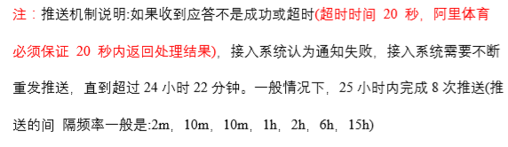

wangxp.site
最近工作中有个技术实现蛮有意思的，写在这里记录下来，要求如下

首先，看看项目之前对这种情况的处理，发现一般是用定时任务来管理的，但是对于上述的推送机制来说， 如果做定时任务的话，每分钟刷新的频次必须是最小间隔时长也就是两分钟，这在系统性能的耗费上是极大的，所以做定时任务是不必要的。
然后对这个任务做下分析，发现这与消息队列的常用使用场景—生产者消费者设计模式很符合。于是打算用redis的消息队列机制来实现。 但是又发现任务其实是与生产者消费者设计模式存在矛盾，主要是生产消费并不存在一个定时的机制。在我们的推送重置发起时，是有可能 存在前一个比后一个推送后发起的情况（发起间隔时间会变化），这就与队列的特性-FIFO违背了。所以还得换种方式。
最后还是采用了多线程的方式，对每次推送失败的任务单开一个线程来管理其下一次推送。线程的睡眠时间取决于下次发起需要等待的时间
具体实现细节有：用ExecutorService来管理线程池，这样有个好处是ExecutorService自带等待机制，当达到最大线程并发数时，外面未执行的线程会处于等待中
然后因为之前参数是用的hashMap，这是不支持多线程的，但是研究后知道，hashmap的不支持多线程机制是在并发对单个map进行put操作时，在进行rehash过程中会出现死循环和元素丢失问题， 这不会对我代码造成影响，所以也并没有改使用其他map
实例代码的话，等以后再发出来吧~~~